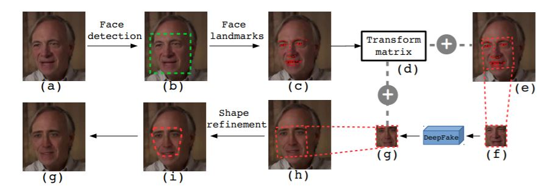

Le terme DeepFake provient de la combinaison des termes « deep learning » et « fake ». Concrètement, il s’agit d’une technologie qui utilise des réseaux de neurones et d’autres techniques d’intelligence artificielle pour créer des vidéos réalistes de choses qui ne le sont pas. L’objectif est alors d’induire en erreur les personnes visionnant la vidéo et de les influencer.
Une forme très répandue depuis plusieurs années des deepfakes est la possibilité de remplacer le visage de personnes sur des vidéos par d’autres, pour leur attribuer des propos qu’ils n’ont pas tenu et les discréditer aux yeux de l’opinion publique. Ces attaques prennent généralement pour cibles des personnalités politiques ou des célébrités.
Pour alerter sur ce phénomène, un belge a notamment créé un compte sur le réseau social TikTok fin février et publié des vidéos de Tom Cruise montée de toutes pièces par un algorithme.
En 2020, une compétition organisée par FaceBook a rassemblé 2000 participants pour mettre en place des solutions innovantes de détection de deepfakes. A cette occasion, les organisateurs avaient préparé un dataset de 100 000 vidéos, parmi lesquelles de nombreuses ont été tournées spécifiquement pour l’évènement. De plus, un nombre important de transformations différentes ont été appliquées pour rendre le jeu de données le plus exhaustif possible. Par exemple, des images aléatoires ont été ajoutées à certaines vidéos, les résolutions trafiquées, des contrastes modifiés etc …
L’étude des résultats et des programmes développés propose plusieurs pistes intéressantes communes aux meilleurs détecteurs. Par exemple, de nombreux candidats ont procédé à une augmentation des données en modifiant des morceaux d’images, de manière aléatoire ou en utilisant des mécanismes d’attention. Certaines augmentations de données reposaient sur l’assemblage de visages réels et générés par une IA. Il est amusant de noter qu’aucun candidat n’a utilisé de technique scientifique basée sur des capteurs physiques de bruit ou d’autres technologies habituelles de la génération d’images. Enfin, les meilleurs projets ont tous utilisés des réseaux pré-entraînés EfficientNet, les différences entre les candidats étant leur nombre et les méthodes de combinaison employées.
L’identification de ces caractéristiques communes pourrait permettre aux chercheurs de Facebook d’améliorer significativement leurs modèles, en s’inspirant des meilleures méthodes et en étudiant les idées novatrices proposées. Cependant, il est important de noter que les résultats ne dépassent pas 70% de réussite sur les nouvelles deepfakes proposées pour la phase de test finale. La recherche avance mais de nombreux progrès restent à faire.
Par ailleurs, la communauté des chercheurs considère qu’une amélioration de la détection des deepfakes en ligne ne passe pas uniquement par l’étude des images et de leur enchaînement dans la vidéo, mais également par un travail autour de la provenance, du contexte social et politique au moment de la vidéo etc …
Cette étude s’intéresse spécifiquement aux deepfakes dans lesquelles le visage d’un être humain est remplacé par un autre. Comme indiqué précédemment, les mécanismes de réseaux de neurones utilisés permettent de conserver les expressions faciales. Cependant, dans de nombreux cas, ce mécanisme laisse de nombreux artéfacts sur l’image. Ceux-ci sont indétectables à l’œil nu mais peuvent l’être grâce à des algorithmes de machine learning particuliers.
Les artéfacts de ces images proviennent des déformations apportées au visage synthétisé pour le faire correspondre au visage source. En effet, cette transformation modifie la résolution de l’image au niveau des bords du visage.
L’étude est menée à partir d’un jeu de données d’entraînement de plus de 24 000 visages disponibles sur Internet. Pour obtenir les images truquées, on ne remplace pas les visages par d’autres mais on cherche à ajouter les artéfacts.
Plus précisément, l’opération consiste tout d’abord à détecter le visage sur l’image grâce à des réseaux de neurones puis à l’extraire. Ensuite, des modifications pseudo-aléatoires sont apportées au visage sur l’éclairage et sa résolution pour modéliser un maximum de cas possibles. Enfin, la transformation affine du visage est réalisée et ce dernier est alors replacé sur son image d’origine avec un lissage sur les frontières pour plus de réalisme.
Ensuite, l’objectif est d’entraîner 4 réseaux de convolution pré-entraînés différents avec nos données d’entrée. Ainsi, lors de la phase de tests avec de nouvelles données, les réseaux pourront renvoyer une probabilité d’avoir affaire à une vidéo truquée.
Pour cela, on ne conserve pas l’intégralité de l’image mais seulement des régions dites d’intérêt, de formes carrées. Ces régions doivent à la fois contenir les visages et une partie de l’environnement nécessaire à la détection du trucage. Ces zones sont ensuite transformées en images de 224x224 pixels pour les besoins des CNN.
Par ailleurs, le batch size est fixé à 64, le taux d’apprentissage à 0.001 avec un decay de 0.95 toutes les 1000 étapes et l’optimisation est réalisée par SGD.
Là encore, l’évaluation des résultats se fait par rapport aux autres algorithmes disponibles sur le marché. On retrouve notamment 3 méthodes différentes : Two-Stream NN, MesoNet et HeadPose. Par ailleurs, les jeux de données pour l’évaluation sont UAFDV, un ensemble de 98 vidéos de 11 secondes avec une seule personne dont la moitié comporte des trucages, et DeepFake TIMIT, où le nombre de sujets sur les vidéos est plus important et où des qualités de résolution différentes sont disponibles (LQ et HQ). On obtient les résultats ci-contre :
Comme illustré dans le tableau des résultats, les modèles ResNet présentent de meilleures performances que les autres méthodes de l’état de l’art. En particulier, le réseau ResNet50 surpasse l’ensemble des autres propositions, avec par exemple des résultats 16% plus précis que la méthode Two-Stream NN sur les deux jeux de données. De plus, on note que sur les vidéos en haute qualité de DeepFake TIMIT, les résultats sont bien supérieurs. Cela s’explique par la possibilité d’un sur-apprentissage pour MesoNet par exemple.
L’objectif du projet est donc de poursuivre l’amélioration de la méthode et sa robustesse, en ajoutant par exemple une compression des vidéos. Dans un second temps, les chercheurs souhaitent construire de nouveaux réseaux de convolution spécifiques à cet usage pour observer l’impact sur la détection.